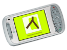

Struinen door het landschap, met een persoonlijke 'Digitale Wichelroede' die interessante wetenswaardigheden toont op het moment dat jij als gebruiker persoonlijk geprikkeld wilt worden? Of wil je zelf je persoonlijke verhaal over de omgeving delen met andere Digitale Wichelaars? Het is allemaal mogelijk. Project de Digitale Wichelroede onderzoekt hoe op innovatieve wijze cultuurhistorische kennis beschikbaar gemaakt kan worden voor de recreant van nu, die wandelend of fietsend zijn omgeving fysiek én virtueel wil beleven. De moderne 'wichelroede' is geen eenvoudige wilge- of hazelaartak, maar een kien product uit de mobiele en locatie bepalingstechnologie.
Met een consortium waarin partners van uiteenlopende achtergrond zitting hebben wordt met project de Digitale Wichelroede onderzoek gedaan naar de kansen van zo´n moderne 'wichelroede'. Immers, alvorens een product te ontwikkelen moet onderzocht worden hoe zo´n Digitale Wichelroede er het best uit kan zien en wat zijn technische en inhoudelijke mogelijkheden zijn. Er wordt dan ook hard gewerkt aan een pilotversie en deze wordt in de zomer van 2007 getest. Hoe en waarom we dat doen lees je hieronder.

Een slim apparaat
De Digitale Wichelroede is een slim apparaat dat een heleboel weet, zodat jij als gebruiker díe cultuurhistorische kennis eruit kan halen waarover je graag wat meer te weten wilt komen. Bij het ontwikkelen van het apparaat moet daarom eerst een heleboel kennis verzameld en gedigitaliseerd worden. Deze informatie halen we overal vandaan. Uit boeken, databases, maar ook van historische verenigingen en van mensen die in een bepaald gebied wonen. Al deze verhalen worden gekoppeld aan specifieke plekken in een bepaald gebied en vastgepind op een digitale geografische kaart. Nadat wetenswaardigheden en mogelijke routes en locaties zijn samengebracht worden ze in een speciaal voor het project ontworpen en gebouwd mobiel systeem geladen. Dit systeem beschikt ook over een GPS waardoor de struiner niet kan verdwalen.
Leden van een speciaal testteam kunnen nu op pad. Ze zullen navigeren door het landschap, op zoek naar bijzondere plekken. Zo ontstaat een interactieve overdracht van informatie tussen mens en landschap. Maar hoe de test-recreant zijn tocht met de Digitale Wichelroede precies zal ervaren weten we natuurlijk nog niet. Daar komen we pas achter na de zomer van 2007 als de tests zijn afgerond.
De resultaten van het onderzoek worden uiteindelijk opgetekend in een rapport waarin onder meer de bruikbaarheid van een systeem om kennis digitaal op te slaan, de interface, de ordening van informatie, het onderscheid tussen passief en actief gebruik met het oog op gebruiksgemak, -plezier en – intensiteit worden geëvalueerd.
De (tussen)uitkomsten van het onderzoek zullen via verschillende kanalen kenbaar gemaakt worden. Via onze website www.digitalewichelroede.nl kun je ons volgen en kun je lezen over actuele ontwikkelingen.
Het initiatief voor onderzoeksproject de Digitale Wichelroede sluit aan bij actuele ontwikkelingen op het gebied van recreatie, technologie, en onderzoek. Zo bestaat bij de recreant van nu de wens het landschap, cultuur en geschiedenis te willen 'beleven', het liefst op een zo persoonlijke manier. Daarnaast zal onder meer door de vergrijzing de komende jaren de vrije tijd toenemen. De verwachting is bovendien dat locatie gebaseerde technologie innoveert omdat het zich richt op de individuele, plaatsafhankelijke informatievraag, inspeelt op een veranderend gebruik van het landschap – denk bijvoorbeeld aan de economische vernieuwing van landelijke gebieden - en bijdraagt aan een toeristisch-recreatief product geschrankt op GEO-Informatie.
Ook is veel cultuurhistorische informatie, bijvoorbeeld de kennis van historische verenigingen of verhalen van mensen die al heel lang in een bepaald gebied wonen nog niet ontsloten voor digitaal gebruik. Deze informatie is erg waardevol en gaat verloren als hij niet wordt gedocumenteerd. Naast deze noodzaak te 'bewaren' is onderzoek van belang omdat al doende bruggen gebouwd en geslagen worden tussen geo-informatie deskundigen, cultuurhistorische bronhouders (zoals gemeenten, provincies, stichtingen en bewoners van een bepaald gebied) en cultuur-toeristische informatie deskundigen. Tegelijkertijd dient het project tot projectontwikkeling. Het is immers een proeftuin voor geo-informatica en mobiele technologie. Kortom, redenen te over voor het doen van onderzoek naar nieuwe manieren van cultuur-toerisme.
Binnen het project wordt ingezoomd op twee case-gebieden. Beide gebieden kennen een eigen schaal en cultuurhistorich verleden.
In deze nieuwbouwwijk in de Vinexwijk Leidsche Rijn in Utrecht bevindt de geschiedenis zich letterlijk onder je voeten in de vorm van archeologische vondsten zoals houten Romeinse boten, een antieke snelweg, en een middeleeuws kasteel. Deze relicten zijn puzzelstukken die deel uitmaken van een groots verhaal dat vertelt over hoe deze plek er tweeduizend jaar geleden en in middeleeuwse tijd uitzag. Boven de grond is weinig meer te zien van het verleden en de Digitale Wichelroede biedt dan ook uitkomst om te verbeelden wat verloren is gegaan. Hier wordt de moderne wichelroede voor de beleving van een relatief klein gebied ingezet. Lopend over het terrein met een Digitale Wichelroede in de aanslag kun je de wereld van de Romeinen en ridders opnieuw oproepen en waan je je archeoloog, zoekend naar 'sporen' uit het verleden.
Het gebied waar de Grebbelinie ligt is grootschaliger dan Nijevelt. Dit gebied vol achttiende-eeuwse fortificaties geldt als een belangrijk toeristisch gebied in de Gelderse Vallei. Hier bevind je je in een lagenlandschap van natuur, cultuur en historie. Met behulp van de Digitale Wichelroede kun je een persoonlijk toegesneden verkenningstocht organiseren door verschillende tijd- en cultuurlagen, op zoek naar kazematten, forten of bijvoorbeeld de mysterieuze drakentandenversperring.